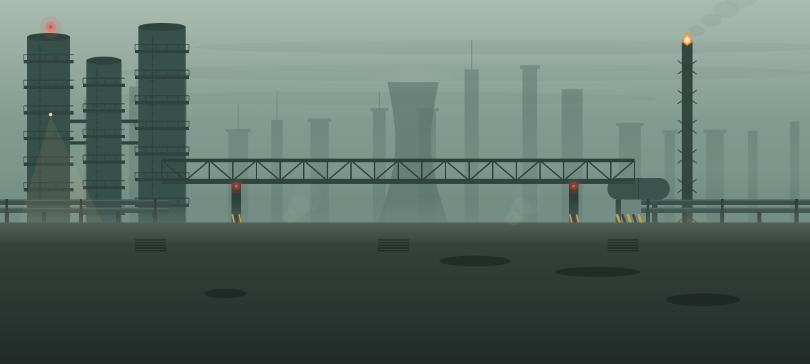
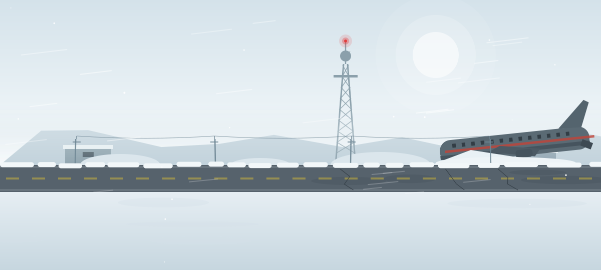
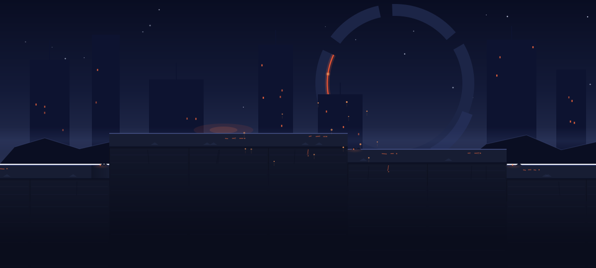
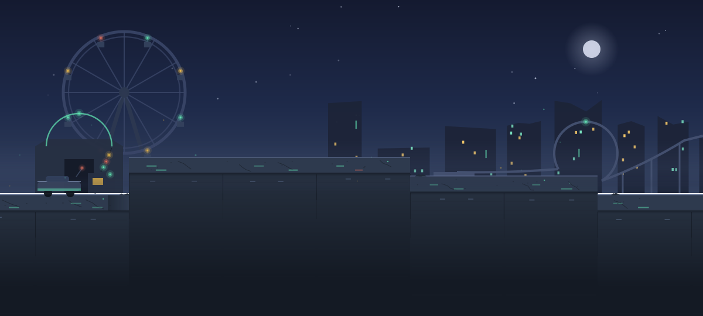
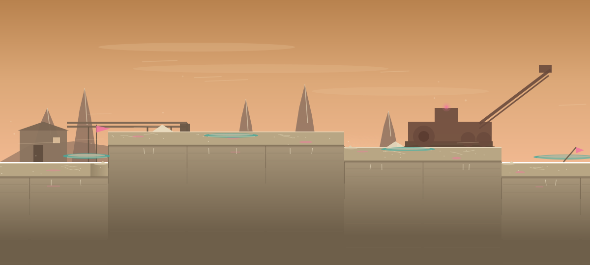
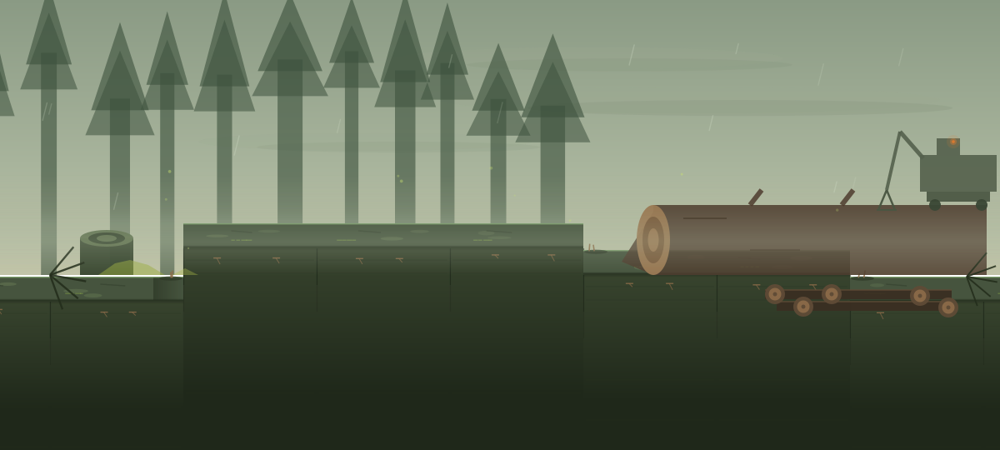

2d-ac 场景美术提案 · AC6 方向（手写矢量）
画布 1200×540 = 游戏视口 2400×1080 的一半（20:9）；地面线 y=330 ≈ 画面 61%，对齐游戏内落位。全部几何计算生成，无滤镜/文本，Godot ThorVG 兼容。纯场景，不含机甲。
方案一 · 锈雨废都
第一章废弃都市 vibe：酸雾锈色 + 钠灯橙点，断桥垂缆、层叠废墟天际线。

调色板：#c9b88e#57544a#3a382f#ffa04a#4d4a40
分层/视差：远景天际线 0.9 / 中景楼群 0.55 / 地表 0；钠灯橙是唯一的暖色，敌我弹道 readable
方案二 · 精炼所工业带
工厂/墙 vibe：钢青绿天光 + 红警灯 + 危险黄，桁架栈桥横穿画面。

调色板：#7f988e#38504a#2c403a#ff4640#d8a021
分层/视差：远景烟囱群 0.9 / 中景塔群栈桥 0.55 / 前景管排与地表 0；结构感最强，最'工业 AC'
方案三 · 雪原警戒点
第三章雪原 vibe：高调冰白 + 暗色剪影 + 一点信号红，半埋运输机残骸。

调色板：#f7fafb#c2d2db#4d5963#5a6a74#e23d3d
分层/视差：远岭雷达塔 0.9 / 中景残骸雪堆 0.55 / 雪盖公路 0；暗色机体在雪上辨识度最高
方案四 · 珊瑚辐合夜
后期 Coral vibe：靛蓝夜空 + 碎环巨构 + 地裂珊瑚辉光，最具 AC6 辨识度。

调色板：#090d22#182042#0d1330#ff5a33#ffb36b
分层/视差：碎环+塔群 0.9 / 雾带岩丘 0.55 / 发光地裂地表 0；暗场对弹道可读性是主要风险
方案八 · 闭园夜场
废园夜场 vibe：中调夜蓝 + 霓虹串灯，停摆摩天轮与过山车环轨。

调色板：#1e2a4a#33415e#5fe0b0#e8b84a#d86a5a
分层/视差：楼群/摩天轮 0.9 / 环轨拱门亭 0.55 / 沥青广场 0；暗场章：敌营奶油白反转，夜蓝压中调保黄弹/白特效可读（§6 细则）
方案九 · 镜盐之原
黄昏盐湖 vibe：杏金绯粉天光 + 镜洼映霞，搁浅采盐联合机与盐晶塔。

调色板：#b8824e#f0b890#f2789f#4aa89a#c2b096
分层/视差：盐丘晶塔/联合机 0.9 / 泵站镜洼 0.55 / 盐壳台地 0；黄昏暖中调，粉渍/青绿镜洼=章信号色语言
方案十 · 绿渊林场
雾林伐木场 vibe：灰绿阴天 + 萤黄绿锯末，放倒巨树年轮与伐木吊机。

调色板：#a8b49c#3e523e#b8e04a#4e3c2e#d87a30
分层/视差：林带/倒树吊机 0.9 / 树桩木堆 0.55 / 林地泥台 0；阴天灰绿中调，锯末萤黄绿=滞空威胁的画面前置